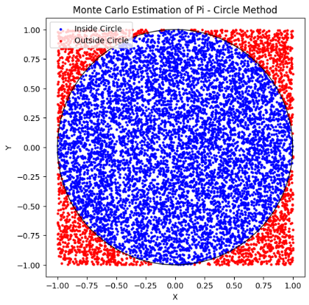

Problem 2
Estimating Pi using Monte Carlo Methods
Motivation
Monte Carlo simulations are a powerful class of computational techniques that use randomness to solve problems or estimate values. One of the most elegant applications of Monte Carlo methods is estimating the value of \(\pi\) through geometric probability. By randomly generating points and analyzing their positions relative to a geometric shape, we can approximate \(\pi\) in an intuitive and visually engaging way.
This problem connects fundamental concepts of probability, geometry, and numerical computation. It also provides a gateway to understanding how randomness can be harnessed to solve complex problems in physics, finance, and computer science. The Monte Carlo approach to \(\pi\) estimation highlights the versatility and simplicity of this method while offering practical insights into convergence rates and computational efficiency.
Part 1: Estimating \(\pi\) using a Circle
1. Theoretical Foundation
-
Explain how the ratio of points inside a circle to the total number of points in a square can be used to estimate \(\pi\).
-
Derive the formula
for a unit circle.
2. Simulation
-
Generate random points in a 2D square bounding a unit circle.
-
Count the number of points falling inside the circle.
-
Estimate \(\pi\) based on the ratio of points inside the circle to the total points.
3. Visualization
- Create a plot showing the randomly generated points, distinguishing those inside and outside the circle.
4. Analysis
-
Investigate how the accuracy of the estimate improves as the number of points increases.
-
Discuss the convergence rate and computational considerations for this method.
Part 2: Estimating \(\pi\) using Buffon's Needle
1. Theoretical Foundation
-
Describe Buffon's Needle problem, where \(\pi\) can be estimated based on the probability of a needle crossing parallel lines on a plane.
-
Derive the formula:
2. Simulation
-
Simulate the random dropping of a needle on a plane with parallel lines.
-
Count the number of times the needle crosses a line.
-
Estimate \(\pi\) based on the derived formula.
3. Visualization
- Create a graphical representation of the simulation, showing the needle positions relative to the lines.
4. Analysis
-
Explore how the number of needle drops affects the estimate's accuracy.
-
Compare the convergence rate of this method to the circle-based approach.
Deliverables
-
A Markdown document with:
-
Clear explanations of the methods and formulas.
-
A discussion of theoretical foundations and results.
-
Python scripts or notebooks implementing the simulations, including:
-
Code for the circle-based Monte Carlo method.
-
Code for Buffon's Needle method.
-
Graphical outputs:
-
Plots showing random points for the circle-based method.
-
Visualizations of needle positions for Buffon's Needle.
-
Analysis:
-
Tables or graphs showing the convergence of estimated \(\pi\) as a function of the number of iterations for both methods.
-
A comparison of the methods in terms of accuracy and computational efficiency.
Hints and Resources
-
Use Python libraries such as NumPy for random number generation and Matplotlib for visualizations.
-
For the circle-based method, ensure the random points are uniformly distributed within the square.
-
For Buffon's Needle, pay attention to geometric constraints, such as the relationship between the needle length and the distance between lines.
-
Start with a small number of iterations to validate the implementation, then increase the sample size to observe convergence.
Python Code

import numpy as np
import matplotlib.pyplot as plt
def estimate_pi_circle(num_points):
"""
Estimate pi using the Monte Carlo method with random points inside a square.
Points inside the unit circle are counted to estimate pi.
Args:
num_points (int): Number of random points to generate.
Returns:
pi_estimate (float): Estimated value of pi.
points (ndarray): Generated points (num_points x 2).
inside_mask (ndarray): Boolean mask for points inside the circle.
"""
# Generate random points in the square [-1, 1] x [-1, 1]
points = np.random.uniform(low=-1, high=1, size=(num_points, 2))
# Calculate distances from origin (0,0)
distances = np.linalg.norm(points, axis=1)
# Mask for points inside the unit circle (distance <= 1)
inside_mask = distances <= 1
# Estimate pi using ratio of points inside circle
pi_estimate = 4 * np.sum(inside_mask) / num_points
return pi_estimate, points, inside_mask
def plot_circle_simulation(points, inside_mask):
"""
Plot the points generated for circle-based Monte Carlo simulation.
Args:
points (ndarray): Array of points (num_points x 2).
inside_mask (ndarray): Boolean mask for points inside the circle.
"""
plt.figure(figsize=(6,6))
plt.scatter(points[inside_mask, 0], points[inside_mask, 1], color='blue', s=5, label='Inside Circle')
plt.scatter(points[~inside_mask, 0], points[~inside_mask, 1], color='red', s=5, label='Outside Circle')
circle = plt.Circle((0, 0), 1, color='black', fill=False, linewidth=1)
plt.gca().add_artist(circle)
plt.title('Monte Carlo Estimation of Pi - Circle Method')
plt.xlabel('X')
plt.ylabel('Y')
plt.legend()
plt.axis('square')
plt.show()
def estimate_pi_buffon(num_throws, needle_length=1, line_distance=1):
"""
Estimate pi using Buffon's Needle experiment.
Args:
num_throws (int): Number of needle drops.
needle_length (float): Length of the needle.
line_distance (float): Distance between parallel lines.
Returns:
pi_estimate (float): Estimated value of pi.
crosses (int): Number of times needle crosses a line.
needles (list of tuples): List of needle positions for visualization.
Each needle is ((x_center, y_center), angle)
"""
crosses = 0
needles = []
for _ in range(num_throws):
# Random position of needle center between 0 and line_distance / 2
center_y = np.random.uniform(0, line_distance / 2)
# Random angle of needle with respect to the lines [0, pi/2]
angle = np.random.uniform(0, np.pi / 2)
# Calculate vertical projection of half needle length
half_proj = (needle_length / 2) * np.sin(angle)
# Check if needle crosses a line
if center_y <= half_proj:
crosses += 1
needles.append(((0, center_y), angle))
if crosses == 0:
# Avoid division by zero
pi_estimate = np.nan
else:
pi_estimate = (2 * needle_length * num_throws) / (line_distance * crosses)
return pi_estimate, crosses, needles
def plot_buffon_needles(needles, needle_length=1, line_distance=1, num_lines=5):
"""
Visualize Buffon's Needle simulation.
Args:
needles (list): List of needle positions ((x_center, y_center), angle).
needle_length (float): Length of needles.
line_distance (float): Distance between parallel lines.
num_lines (int): Number of parallel lines to draw.
"""
plt.figure(figsize=(8, 6))
# Draw parallel lines
for i in range(num_lines):
y = i * line_distance
plt.axhline(y=y, color='black', linewidth=1)
# Plot needles
for (x_center, y_center), angle in needles:
x_start = x_center - (needle_length / 2) * np.cos(angle)
x_end = x_center + (needle_length / 2) * np.cos(angle)
y_start = y_center - (needle_length / 2) * np.sin(angle)
y_end = y_center + (needle_length / 2) * np.sin(angle)
plt.plot([x_start, x_end], [y_start, y_end], 'r-', alpha=0.6)
plt.title("Buffon's Needle Simulation")
plt.xlabel('X')
plt.ylabel('Y')
plt.ylim(-line_distance, line_distance * num_lines)
plt.xlim(-needle_length, needle_length)
plt.gca().set_aspect('equal')
plt.show()
def convergence_analysis_circle(max_points=100000, step=5000):
"""
Analyze convergence of pi estimation using circle method.
Args:
max_points (int): Maximum number of points.
step (int): Step size for iterations.
Returns:
points_list (list): Number of points used.
pi_estimates (list): Corresponding pi estimates.
"""
points_list = []
pi_estimates = []
for n in range(step, max_points + 1, step):
pi_est, _, _ = estimate_pi_circle(n)
points_list.append(n)
pi_estimates.append(pi_est)
return points_list, pi_estimates
def convergence_analysis_buffon(max_throws=100000, step=5000):
"""
Analyze convergence of pi estimation using Buffon's Needle method.
Args:
max_throws (int): Maximum number of needle throws.
step (int): Step size for iterations.
Returns:
throws_list (list): Number of throws used.
pi_estimates (list): Corresponding pi estimates.
"""
throws_list = []
pi_estimates = []
for n in range(step, max_throws + 1, step):
pi_est, crosses, _ = estimate_pi_buffon(n)
throws_list.append(n)
pi_estimates.append(pi_est)
return throws_list, pi_estimates
def plot_convergence(points_list, pi_estimates, throws_list, pi_estimates_buffon):
"""
Plot convergence of pi estimates for both methods.
Args:
points_list (list): Number of points for circle method.
pi_estimates (list): Pi estimates for circle method.
throws_list (list): Number of throws for Buffon's method.
pi_estimates_buffon (list): Pi estimates for Buffon's method.
"""
plt.figure(figsize=(10,6))
plt.plot(points_list, pi_estimates, label='Circle Method')
plt.plot(throws_list, pi_estimates_buffon, label="Buffon's Needle Method")
plt.axhline(y=np.pi, color='black', linestyle='--', label='True Pi')
plt.xlabel('Number of Iterations')
plt.ylabel('Estimated Pi')
plt.title('Convergence of Pi Estimates')
plt.legend()
plt.show()
if __name__ == "__main__":
# Test and visualize circle method
n_points = 10000
pi_est, pts, mask = estimate_pi_circle(n_points)
print(f"Circle Method: Estimated Pi = {pi_est:.6f} with {n_points} points")
plot_circle_simulation(pts, mask)
# Test and visualize Buffon's Needle method
n_throws = 10000
pi_est_b, crosses, needles = estimate_pi_buffon(n_throws)
print(f"Buffon's Needle Method: Estimated Pi = {pi_est_b:.6f} with {n_throws} throws and {crosses} crosses")
plot_buffon_needles(needles[:100], needle_length=1, line_distance=1)
# Convergence analysis
circle_points, circle_pis = convergence_analysis_circle(max_points=50000, step=5000)
buffon_throws, buffon_pis = convergence_analysis_buffon(max_throws=50000, step=5000)
plot_convergence(circle_points, circle_pis, buffon_throws, buffon_pis)